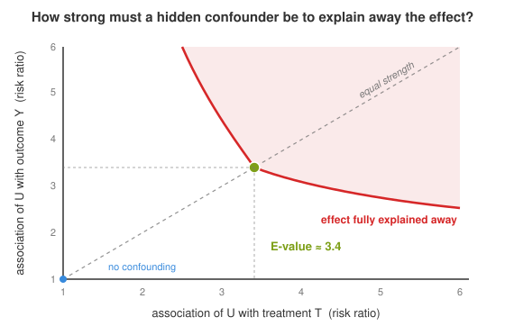
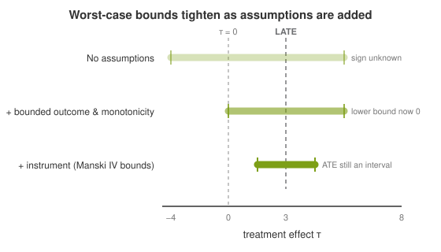
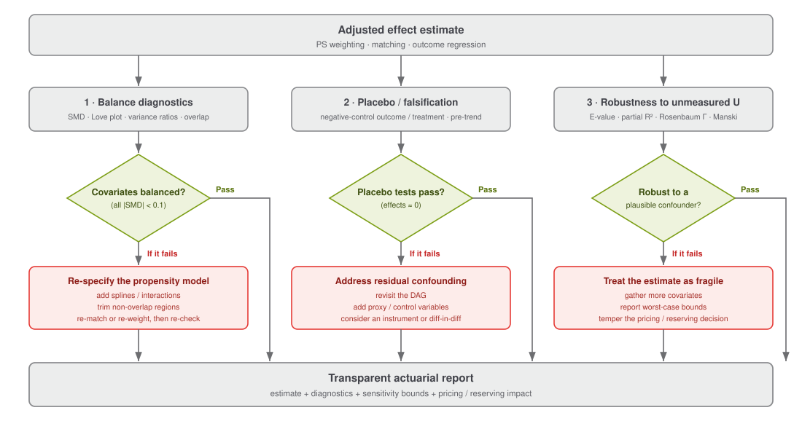

Diagnostics and Sensitivity Analysis#
The identification of causal effects from observational data rests on untestable assumptions - most critically, Assumption 4 (no unmeasured confounding). Sensitivity analysis asks: how robust are our conclusions to violations of these assumptions? This section surveys the main approaches, following Rosenbaum (2002), Cinelli & Hazlett (2020), and Shalizi (2025).
Why Sensitivity Analysis?#
Even with careful adjustment for observed confounders, the possibility of unmeasured confounding can never be ruled out in observational data. Sensitivity analysis complements point estimation by answering:
How strong would an unmeasured confounder \(U\) need to be to explain away the observed effect?
How much would the estimated treatment effect change under plausible confounding scenarios?
What are the bounds on the true effect under worst-case confounding?
Without sensitivity analysis, causal conclusions from observational data remain fundamentally incomplete.
Partial \(R^2\): how much confounding would it take?#
The figure below makes questions 1 and 2 tangible. Imagine our adjusted estimate is a positive effect of \(+3\). Now hypothesise a confounder \(U\) that we failed to measure and ask: how strongly would it have to be linked to the treatment and to the outcome before our conclusion collapses? Drag the two sliders - each one is a partial \(R^2\), the share of variation in \(T\) (or \(Y\)) that \(U\) would explain on top of everything we already adjusted for (Definition 16).
Move along the diagonal (equal strength on both fronts) to read off the robustness value: the partial \(R^2\) a confounder would need with both \(T\) and \(Y\) to drag the point estimate to zero (\(RV\)) - or, at a lower threshold (\(RV_\alpha\)), merely to erase its statistical significance.
Press “as strong as covariate \(X\)” to benchmark against a confounder no stronger than one we already observe - if that point sits well inside the green region, even a substantial omitted variable would not overturn the finding.
Watch panel 2: the bias drags the estimate toward zero, and the verdict flips to explained away only once the confounder crosses the red frontier.
The two sliders set the partial-\(R^2\) terms in the omitted-variable bias bound (formally defined in Definition 16): one for how much of the residual variation in \(T\) the confounder explains, and one for how much of the residual variation in \(Y\) it explains.
The rest of this section formalises the tools behind this picture: E-values put question 1 on a risk-ratio scale, partial \(R^2\) contours generalise the map above, Rosenbaum bounds answer question 1 for matched designs, and Manski bounds answer question 3 directly.
Balance Diagnostics#
Before performing sensitivity analysis for unmeasured confounding, it is essential to verify that measured confounders are adequately balanced after adjustment. Balance diagnostics assess whether the adjustment method (matching, weighting, regression) has successfully eliminated observed confounding (Austin, 2011).
Definition 12 (Standardised Mean Difference (SMD))
The standardised mean difference for a covariate \(X_j\) between treated and control groups is:
where \(\bar{X}_{j,t}\) is the (weighted) mean of \(X_j\) in treatment group \(t\) - computed on the weighted/matched sample after adjustment - while the denominator standard deviations \(s_{j,t}^2\) are the unweighted variances from the full, unadjusted sample and are held fixed across the pre- and post-adjustment comparison (Austin, 2009, p. 3085; Austin, 2011). Re-computing the denominator from the weighted pseudo-population would put the pre- and post-adjustment SMDs on different scales and let extreme weights deflate the variance, making balance look better than it is.
A common threshold is \(|\text{SMD}| < 0.1\) for adequate balance. For propensity-score-based methods, compare SMDs before and after weighting/matching across all covariates. Poor balance signals residual confounding that undermines the analysis.
Additional diagnostics include:
Propensity score overlap plots: Histograms or density plots of \(\hat{\pi}(x)\) by treatment group.
Variance ratios: The ratio of covariate variances between groups (target: close to 1).
Love plots: Visual display of SMDs for all covariates, before and after adjustment.
The Love plot below is interactive. Drag the adjustment-strength slider to weight the sample toward balance: the causal diagram shows the backdoor path \(X \rightarrow T\) closing, and each covariate’s SMD migrates from its raw value (open circle) toward zero (filled circle), turning green once it falls within the \(|\text{SMD}| < 0.1\) band.
The slider sets the green adjustment strength \(s\) that shrinks each covariate’s standardised mean difference toward zero (\(s = 0\) raw, \(s = 1\) fully balanced):
where \(e_j \in [0, 1]\) is how effectively the adjustment balances covariate \(j\).
Placebo and Falsification Tests#
Definition 13 (Placebo Test)
A placebo test (falsification test) applies the causal estimator to a setting where the true effect is known to be zero. If the estimator reports a non-zero effect, this signals bias (likely from unmeasured confounding or model misspecification).
Common designs:
Negative control outcome: Estimate the effect of \(T\) on an outcome \(\tilde{Y}\) that \(T\) cannot plausibly affect. A non-zero estimate implies residual confounding (Lipsitch, Tchetgen & Cohen, 2010).
Negative control treatment: Estimate the effect of a “treatment” \(\tilde{T}\) that cannot plausibly affect \(Y\). A non-zero estimate again signals confounding.
Pre-treatment outcome test: If pre-treatment outcome data exists, test whether the “treatment” predicts the outcome before it was administered. A significant effect indicates confounding.
In insurance applications, a natural pre-treatment outcome test arises when evaluating a telematics-based safe-driving discount on subsequent accident frequency: test whether enrolment in the scheme “predicts” accident frequency in the year before enrolment. Enrolment cannot causally affect past accidents, so any significant association reveals that safer drivers self-selected into the programme - a confounding structure that must be addressed before interpreting post-enrolment differences causally.
Rosenbaum Bounds#
Rosenbaum (2002) developed a framework for bounding the effect of unmeasured confounding in matched observational studies.
Definition 14 (Rosenbaum’s Sensitivity Parameter \(\Gamma\))
In a matched pair \((i, j)\) with similar observed covariates (\(X_i \approx X_j\)), the sensitivity parameter \(\Gamma \geq 1\) bounds the ratio of treatment assignment odds, where each unit’s assignment probability \(\pi = P(T = 1 \mid X, U)\) depends on both the observed covariates \(X\) and an unmeasured confounder \(U\):
Because matching equalises only the observed covariates, the hidden \(U_i \neq U_j\) can still drive the odds apart: matched units share \(X\) but not \(U\), so this ratio departs from \(1\) exactly to the extent that an unmeasured confounder influences treatment. When \(\Gamma = 1\), treatment assignment is random within matched pairs (no unmeasured confounding). As \(\Gamma\) increases, more confounding is allowed.
For each value of \(\Gamma\), Rosenbaum’s method computes worst-case p-values and confidence intervals. The analysis reports the critical \(\Gamma\) at which the effect would no longer be statistically significant - a larger critical \(\Gamma\) indicates a more robust finding.
Drag the \(\alpha\) slider below to set the significance threshold: the red dot tracks where the worst-case \(p\)-value curve crosses it, and the green band marks the range of hidden bias the conclusion can still absorb.
The slider sets the red significance level \(\alpha\); the critical sensitivity parameter \(\Gamma^{\star}\) is the largest hidden bias the conclusion tolerates before the worst-case \(p\)-value exceeds it:
Reading the figure. At \(\Gamma = 1\) (no hidden bias) the result is firmly significant, exactly the conventional analysis. Moving right asks “what if assignment were not random within pairs?” - each step admits a stronger lurking variable, so the worst-case \(p\)-value climbs. A finding whose curve crosses \(\alpha\) only at a large \(\Gamma\) is reassuring; one that crosses just past \(\Gamma = 1\) is fragile, hingeing on the assumption of no unmeasured confounding. Reporting the critical \(\Gamma\) turns “we hope there is no hidden bias” into a quantified statement of how much hidden bias the conclusion could tolerate.
E-Values#
The E-value (VanderWeele & Ding, 2017) provides a simple, model-free summary of sensitivity to unmeasured confounding.
Definition 15 (E-Value)
The E-value is defined for a binary outcome \(Y \in \{0, 1\}\). The observed risk ratio is the ratio of the probability of the outcome under treatment to the probability under control, conditional on observed covariates \(X\):
For continuous or count outcomes, \(\text{RR}_{\text{obs}}\) is not directly defined; see the note below on converting to an approximate risk ratio scale before applying the formula.
The E-value for an observed risk ratio \(\text{RR}_{\text{obs}} \ge 1\) is:
The E-value represents the minimum strength of association (on the risk ratio scale) that an unmeasured confounder \(U\) would need to have with both the treatment \(T\) and the outcome \(Y\), conditional on measured covariates, to fully explain away the observed effect.
For a protective effect (\(\text{RR}_{\text{obs}} < 1\)) the radicand \(\text{RR}_{\text{obs}}(\text{RR}_{\text{obs}} - 1)\) is negative and the formula is undefined. Following VanderWeele & Ding (2017), first replace the risk ratio by its reciprocal \(1/\text{RR}_{\text{obs}} > 1\) and then apply the formula. This case is the norm in actuarial work - a wellness programme that lowers claim frequency or a safety feature that reduces loss counts both yield \(\text{RR}_{\text{obs}} < 1\).
A large E-value means the observed association is robust: only a very strong unmeasured confounder could explain it away. A small E-value indicates vulnerability to even moderate unmeasured confounding.
For treatment effects on continuous outcomes, analogous E-values can be computed by first converting the effect to an approximate risk ratio scale.
{kind=link}

Fig. 21 The E-value as a frontier. Each point on the red curve is a combination of confounder strengths - its association with the treatment \(T\) (horizontal) and with the outcome \(Y\) (vertical), both on the risk-ratio scale - that would be just sufficient to explain the observed effect away. Anything in the shaded region (stronger on both fronts) would nullify it; anything below the curve would not. The E-value is the single number where the curve meets the equal-strength diagonal: here \(E \approx 3.4\), so a confounder would need a risk ratio of at least \(3.4\) with both \(T\) and \(Y\) to account for the result.#
Reading the figure. The blue dot at the origin is the world we assume - no confounding. As we travel up the diagonal, we postulate ever-stronger confounders that are equally linked to treatment and outcome. The effect is only “explained away” once we reach the red curve. A large E-value pushes that crossing far from the origin, so the conclusion is robust; a small E-value would place the curve close to the origin, meaning even a weak omitted variable could be responsible. Crucially, an unmeasured confounder need not be balanced across both arrows - points off the diagonal (very strong on one front, weak on the other) can also reach the frontier, which is why the full curve, not just the single E-value, tells the complete story.
Partial \(R^2\) and Omitted Variable Bias#
Cinelli & Hazlett (2020) provide a regression-based sensitivity analysis framework using the partial \(R^2\) - the proportion of residual variance explained by an omitted confounder.
Definition 16 (Partial \(R^2\) Sensitivity)
Let \(R^2_{Y \sim U \mid T, X}\) denote the partial \(R^2\) of the omitted confounder \(U\) with the outcome \(Y\) (after adjusting for \(T\) and \(X\)), and \(R^2_{T \sim U \mid X}\) the partial \(R^2\) with the treatment \(T\). The bias in the treatment effect estimate due to omitting \(U\) is bounded by:
where \(Y_{\text{res}}\) is the residual from regressing \(Y\) on both \(T\) and \(X\) (the full outcome-regression residual), and \(T_{\text{res}}\) is the residual from regressing \(T\) on \(X\). The denominator \(1 - R^2_{T \sim U \mid X}\) is the amplification factor: as the confounder explains more of the treatment, the same partial \(R^2\) with \(Y\) translates into a larger bias. Dropping it (using only \(\sqrt{R^2_{Y \sim U \mid T, X}\, R^2_{T \sim U \mid X}}\)) understates the bias and is not a valid upper bound - e.g. it underestimates by \(\approx 5\%\) at \(R^2_{T \sim U \mid X}=0.1\), \(\approx 16\%\) at \(0.3\), and \(\approx 29\%\) at \(0.5\).
This framework is particularly intuitive because the required confounding strengths can be benchmarked against observed covariates: “the unmeasured confounder would need to be as strong as [observed covariate \(X_j\)] to reduce the effect to zero.”
Two robustness values. Cinelli & Hazlett (2020, Sec. 4.3) define two thresholds along the equal-strength diagonal - the locus where the confounder’s partial \(R^2\) with \(T\) equals its partial \(R^2\) with \(Y\). The robustness value for the point estimate, \(RV_{q=1}\), is the partial \(R^2\) (with both \(T\) and \(Y\)) at which the estimate is driven exactly to zero. The robustness value for statistical significance, \(RV_{q=1,\alpha}\), is the (typically smaller) threshold at which the \((1-\alpha)\) confidence interval first reaches zero - beyond which the effect is no longer significant at level \(\alpha\). Because a significant finding has a confidence interval strictly bounded away from zero, \(RV_{q=1,\alpha} < RV_{q=1}\) whenever the estimate is significant, and the gap can be substantial. For an actuarial decision - whether to set a pricing adjustment or launch a triage protocol - the binding question is usually robustness of significance rather than of the point estimate, so \(RV_{q=1,\alpha}\) is the more relevant number. Both are reported by default: by sensemakr, and by the DML robustness-value output in the claims-triage case study (which prints \(RV\) alongside the smaller \(RV_\alpha\)).
The sensemakr R package implements this approach and produces contour plots showing how the estimated effect changes across a grid of \((R^2_{Y \sim U \mid T, X}, R^2_{T \sim U \mid X})\) values. The interactive map at the top of this section is exactly such a contour: the red frontier is the locus where the bias reaches the observed estimate, and the orange diamond is the “as strong as covariate \(X\)” benchmark. The further the benchmark sits inside the green (effect-survives) region, the more comfortably the conclusion withstands an omitted variable of comparable strength.
Bounds on Treatment Effects#
When parametric assumptions are undesirable, partial identification provides worst-case bounds on treatment effects under minimal assumptions.
Definition 17 (Manski Bounds)
Under no assumptions beyond bounded outcomes (\(Y \in [y_{\min}, y_{\max}]\)), the ATE \(\tau = \mathbb{E}[Y(1)] - \mathbb{E}[Y(0)]\) is sharply bounded by (Manski, 1990):
Each bound replaces the two unobserved counterfactual means - \(\mathbb{E}[Y(1) \mid T{=}0]\) and \(\mathbb{E}[Y(0) \mid T{=}1]\) - with their worst-case values \(y_{\min}\) or \(y_{\max}\), so the interval always has width \(y_{\max} - y_{\min}\) and, by construction, contains zero.
These bounds are sharp (cannot be tightened without further assumptions) but often wide. Two sharpening assumptions are especially relevant for insurance:
Monotone treatment response (MTR): \(Y(1) \geq Y(0)\) for every unit - plausible for a preventive or safety intervention that can only help - which lifts the lower bound to zero (Manski, 1997).
Monotone treatment selection (MTS): higher-risk individuals self-select into treatment, so treated units have weakly higher mean potential outcomes - which tightens the bound in the opposite direction (Manski & Pepper, 2000).
Imposed together, MTR and MTS narrow the worst-case interval substantially; a valid instrument narrows the ATE interval further still (Manski’s IV bounds), though under heterogeneous effects it point-identifies only the LATE - the average effect among compliers - rather than the ATE (Imbens & Angrist, 1994).
{kind=link}

Fig. 22 Worst-case bounds and the price of assumptions. Each bar is the range of ATE values compatible with the data under a given set of assumptions. With no assumptions beyond a bounded outcome, the interval is so wide it straddles zero - the data alone cannot even tell us the sign of the effect. Adding monotonicity (the treatment never hurts) lifts the lower edge exactly to zero - the sharp MTR lower bound equals zero identically (Manski, 1997), so the effect is now known to be non-negative but not bounded away from zero. Adding a valid instrument tightens the interval further still (Manski’s IV bounds), but with heterogeneous effects it does not collapse the ATE to a point: point identification of the ATE would require constant effects (\(\tau_i = \tau\) for all \(i\)) or full compliance. What a valid instrument does point-identify is a different estimand - the LATE, the average effect among compliers (Imbens & Angrist, 1994), shown by the dashed line - which need not equal the ATE. The dashed line at \(\tau = 0\) marks no effect.#
Reading the figure. This answers question 3 - what are the bounds under worst-case confounding? - from the opposite direction to the E-value and Rosenbaum tools. Rather than asking how strong a confounder would have to be, partial identification asks what we can say while assuming as little as possible. The honest starting point (top bar) is often uncomfortably wide, which is precisely the message: a single number is only as credible as the assumptions that pin it down. Each assumption we are willing to defend buys a narrower interval, and the figure makes that trade-off explicit - a transparent alternative to reporting one estimate as if it were assumption-free.
Actuarial Sensitivity Analysis Workflow#
The tools above slot into a single decision pipeline. The estimate is only trustworthy once it has survived three sequential gates - balance, falsification, and robustness to unmeasured confounding - each with a concrete remedy if the check fails.
{kind=link}

Fig. 23 The actuarial sensitivity-analysis workflow. After estimating an adjusted effect, three diagnostic gates are applied in turn. Each decision either passes the estimate downstream or routes it to a red remedy that is re-run before continuing. (1) If covariates are not balanced (\(|\text{SMD}| \ge 0.1\)), re-specify the propensity model - add splines/interactions, trim non-overlap, or switch between matching and weighting. (2) If a placebo / negative-control test detects a non-zero effect, treat it as residual confounding: revisit the DAG, add proxy controls, or move to an instrument or difference-in-differences design. (3) If the effect is not robust to a plausible unmeasured confounder (small E-value, low critical \(\Gamma\), wide partial-\(R^2\) bias), treat the estimate as fragile - gather more covariates, report worst-case Manski bounds, and temper the pricing or reserving decision. Only an estimate that clears all three gates reaches the transparent report.#